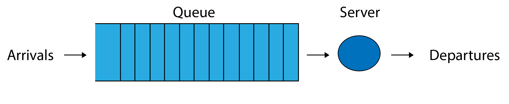
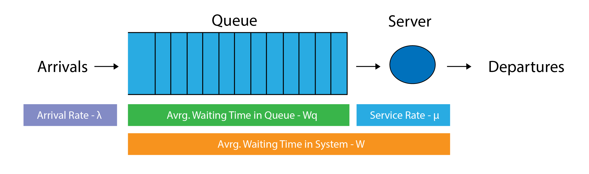

The basic queueing model it's just a queue line and server. Waiting line queue is where the customers form a waiting line.
The order for a line queue is usually first in first served. A queue is formed when customers arrive faster than they can get served.

Stability Condition:
A queue is stable, when it does not grow to become infinite over time. The single-server queue is stable if on the average, the service time is less than the inter-arrival time.
Mean service time < mean inter-arrival time
Example:- Service time = 5 minutes, a customer arrives every 10 minutes.
- No queue will ever be formed
- Service time = 10 minutes, a customer arrives every 5 minutes.
- Queue will grow forever.
Characteristic of Queueing Systems
- Arrival or imputs to the system
- Population size, behavior, and a statistical distribution.
- Queue/Service Discipline
- Capacitiy and behavior of the people or items in it.
- Service facility
- Design and the statistical distribution of the service time
Arrival Characteristic
Population sizes are considered either unlimited(infinite) or limited (finite). When the number of customers or arrivals on hand at any given moment is just a small portion of all potential arrivals, the population is considered infinite. Most queueing models assume such an infinite arrival population.
For the arrival process of costumers usually we assume that the interarrival times are independent and have a common distribution. In many practical situations customers arrive according to a Poisson stream (exponential interarrival times). But there are other cases where customers may arrive one by one or in batches.
Queue/Service Discipline
The lenght of a queue line can be either limited or unlimited. There are many possibilities for the order in which they enter service:
- FIFO - First In First Out: who comes earlier leaves earlier
- LIFO - Last Come First Out: who comes later leaves earlier
- RS - Random Service: the customer is selected randomly
- Priority - Item or customer is given priority in the queue
Service Characteristic
Service systems can be classified in terms of their number of channels (servers) and number of phases.
- Single-channel queueing system, where you have one line and a single server.
- Multiple-channel queueing system, where each customer or item is waiting in one common line but with several servers
- Single-phase, the customer or item receives service from only one station and then exits the system.
- Multiple-phase, the customer or item receives service from several stations before exiting the system.
Service pattern are pretty similar to arrival patterns in that they may be either constant or random. Service times and inter-arrival times are rarely constant. From read data we can construct a histogram of the service time and the inter-arrival time. If read data is not available, then we assume a theoretical distribution. A commonly used theoretical distribution in queueing theory is the exponential distribution.
Single Channel, Single Phase

Ex: Doctor's Office
Multiple Channel, Single Phase

Ex: Post Office or Bank
Single Channel, Multiple Phase

Ex: Drive Through
Kendall introduced a shorthand notation to characterize a range of these queueing models:
A / B / c / K / n / D,
Where
A = interarrival time distribution
B = service time distribution
c = number of servers
K = capacity of the system
n = population size
D = service discipline
When describing the distribution we use: G for a general distribution, M for exponential distribution ( M stands for Memoryless or Markovain ) and D for deterministic times.
In the basic model, customers arrive one by one and they are always allowed to enter the system, there is always room, there are no priority rules and customers are served in order of arrival.
M/M/1 queueing system is the simplest queueing system, a single channel waiting line, where arrivals form a single line to be served by a single station. The requests arrive according to a Poisson process with rate λ, that it's the interarrival times are independent, exponentially distributed random variables with parameter λ. The service times are also assumed to be independent and exponentially distributed with parameter μ.
M/M/1 queueing system means there is one queue per server. This doesn't mean you can't
have multiple servers. Which would mean if there are more servers, each of these are computed
using M/M/1 queues.
Example: 3 servers with 3 queues would be denoted as 3(M/M/1).
Analysis of the System
Input:
λ = mean number of arrivals per time period
μ = mean number of people or items served per time period
Output:
Pn = probability that there are n customers in the system
\[P_n = (1- {λ\over μ})({λ\over μ})^2\]
P0 = probability that there are 0 customers in the system(the service unit is idle)
\[P_0 = 1- {λ\over μ}\]
ρ = percentage of time a server is being utilized by a customer, also known as known as server utilization.
\[ρ = {λ\over μ}\]
L = average number of customers in the system (waiting line and being served)
\[L = {λ\over {μ - λ}}\]
Lq = average number of customers in waiting line for service
\[L_q = {λ^2\over{({μ( {μ - λ}}}))}\]
W = average time a customer spends in the system (waiting line and being served)
\[W = {1\over {μ - λ}}\]
Wq = average time a customer spends waiting in line waiting for service.
\[W_q = {λ\over{({μ( {μ - λ}}}))}\]

John Doe, the mechanic at Doe’s Oil Change Shop, is able to change the oil of a vehicle at an average rate of 3 per hour (1 every 20min), according to exponential distribution. Customers looking for this service arrive at an average of 2 per hour, following a Poisson distribution. They are served FIFO basis and come from a very large population (almost infinite).
From this description, we are able to obtain the operating characteristics of Doe’s Oil Change Shop’s queueing system:
λ = 2 cars arriving per hour μ = 3 cars serviced per hour \[P_0 = 1- {λ\over μ} = 1- {2\over 3} = {1\over 3}\] P0 = .33 probability there are 0 cars in the system. \[ρ = {λ\over μ} = {2\over 3} \] ρ = 66.6% of the time the mechanic is busy \[L = {λ\over {μ - λ}} = {2\over {3 - 2}} = 2\] L = 2 cars in the system, on average \[L_q = {λ^2\over{({μ( {μ - λ}}}))} = {2^2\over{({3( {3 - 2}}}))} = {4\over{{3}}} \] Lq = 1.33 cars waiting in line, on average \[W = {1\over {μ - λ}} = {1\over {3 - 2}} = 1\] W = 1 hour average waiting time in the system \[W_q = {λ\over{({μ( {μ - λ}}}))} = {2\over{({3( {3 - 2}}}))} = {2\over{3}}\] Wq = 40 minute average waiting time per car
Practice
M/M/c is when we have a single queue with more than 1 parallel server. M/M/c is pretty similar to M/M/1 and it's important to realize the difference between them. In M/M/c queueing system we have k parallel servers with a single queue, while in M/M/1 you can have multiple servers but for each server you need to have a queue, for those you want to use the notation c*M/M/1.
#####Image goes here#######
For this type of queue, we require a ρ < 1 for it to be stable. To get ρ on this system we use ρ = λ/(cμ). ρ represents the average proportion of time which each of the servers is occupied.
λ = describes the number of arrivals per unit time
μ = describes the service rate per unit time
c = Number of servers in the queueing System
#####Image goes here#######
Output:
Pn = probability that there are n customers in the system
ρ = Is known as the traffic intensity or server utilization
L = average number of customers in the system (in waiting line and being served)
Lq = average number of customers in waiting line for service
W = average time a customer spends in the system (in waiting line and being served)
Wq = average time a customer spends waiting in line waiting for service.
Formulas (Analysis of the system):
Number of customers in the system
If ρ < 1 the system can be analysed, if ρ > 1 the queue will keep growing to infinity and can’t be calculated.
##formular here##
Where Pn is the probability that there are customers in the system. The average number of customers in the system (in service and in queue) is given by:
##formula here##
To calculate the average number of customers waiting in queue, remove the server utilization from the formula to get:
##formula here##
Time in system
##formula here##
Examples:
##examples here##